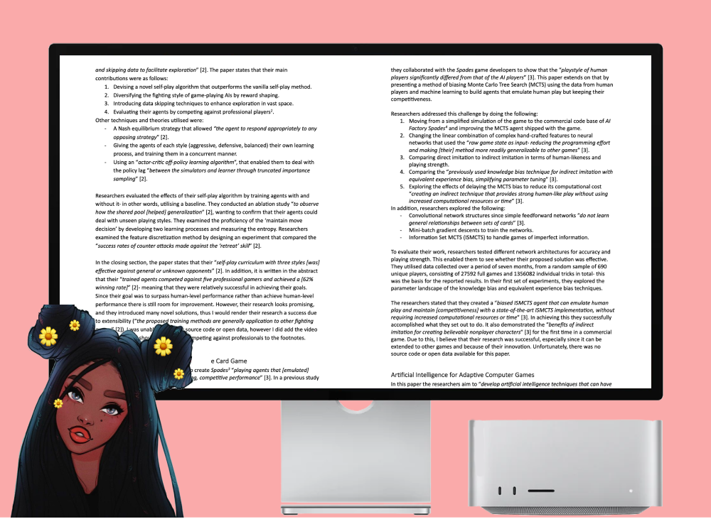

Machine Learning.

Exploring Game playing AIs
In this project, I explored the fascinating domain of game-playing artificial intelligences (AIs). Delving into the research papers, I dissected the methodologies and innovations aimed at pushing the boundaries of AI in gaming. From surpassing human-level performance in complex fighting games to emulating human play in mobile card games, each paper showcased unique approaches and advancements. Additionally, ethical considerations were examined, highlighting the importance of fairness and player enjoyment. Through meticulous analysis and critical evaluation, I gained insights into the evolving landscape of AI in gaming and its broader implications.
I accomplished the following:
- Explored the domain of game-playing AIs through in-depth analysis of research papers.
- Investigated methodologies aimed at surpassing human-level performance in complex fighting games.
- Examined innovative approaches to emulate human play in leading mobile card games.
- Analysed ethical considerations in game-playing AI research, emphasising fairness and player enjoyment.
- Gained insights into the evolving landscape of AI in gaming and its broader implications for technology and society.
- Demonstrated critical thinking and analytical skills through meticulous evaluation of research methodologies and outcomes.
- Showcased ability to synthesize complex information and communicate findings effectively.

Genetic Algorithms
In this project, I undertook the task of building and evaluating a sentiment analysis model for Amazon reviews. Beginning with data preprocessing, I cleaned and prepared the dataset for analysis. Next, I implemented various deep learning architectures using TensorFlow and Keras, experimenting with different model configurations, activation functions, learning rates, and dropout layers. Through systematic experimentation and evaluation, I identified the most effective model architecture for predicting sentiment in Amazon reviews. Notably, I achieved a balance between model performance and generalization to unseen data, with both training and testing accuracies exceeding 86%. Moreover, I thoroughly documented each step of the process, providing detailed analysis and insights into the model's performance. Overall, this project showcases my proficiency in natural language processing, deep learning, and experimental design, highlighting my ability to tackle complex tasks in machine learning and produce actionable insights.
I accomplished the following:
- Developed a sentiment analysis model for Amazon reviews using deep learning techniques.
- Conducted comprehensive data preprocessing to clean and prepare the dataset for analysis.
- Implemented various deep learning architectures using TensorFlow and Keras.
- Experimented with different model configurations, including layers, units, activation functions, and learning rates.
- Explored the impact of dropout layers on model performance to prevent overfitting.
- Systematically evaluated model performance through training and testing accuracy metrics.
- Achieved a balance between model performance and generalisation to unseen data, with accuracies exceeding 86%.
- Provided detailed documentation and analysis of each experimentation step, demonstrating proficiency in experimental design.
- Demonstrated skills in natural language processing, deep learning, and machine learning experimentation.
- Produced actionable insights into sentiment analysis for Amazon reviews, highlighting potential applications in business intelligence and customer feedback analysis.